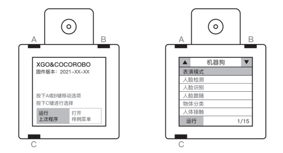

文章目录
2. 离线模式 3. 移动端遥控模式
准备工作
开机
把机器狗按照卧姿摆放，避免关节卡死，然后按下机器狗背部的电源开关，开关上的电源环形灯亮起，机器狗缓缓站立，表示开机成功。

关机
按下背部电源开关，环形灯开始闪烁，机器狗缓缓趴下，然后环形灯熄灭，表示系统完全关机。

充电
当机器狗电量过低时，机器狗开关按键的环形灯闪烁并趴下，此时代表机器狗需要充电。 将锂电池专用充电器插入机器狗腹部的充电口，约2小时可以充满电，充电时充电器电源指示灯为红色，如充满电指示灯变成绿色。 
离线模式
离线模式指的是，机器狗脱离手机或者电脑，通过AI模组上的按键操作即可操作体验机器狗。
界面说明
将机器狗平铺后按下电源键，机器狗进入默认站立初始状态，此时屏幕亮起如下图所示。初始界面中有4个信息需要我们掌握，A、B和C键在模组上的位置如下图所示。 
- 固件版本：表示当前AI模块的固件版本号，可以在官方网站下载最新版本固件及工具。
- 操作说明：A、B键操控界面菜单选项的切换，C键表示确认操作，长按C健退出当前程序。
- 运行上次程序：通过编程将程序上传到AI模块时，可以选择这个选项，让AI模块运行最新一次上传的程序；
- 尝试示例程序：选择这个选项，可以进入下一个界面，体验存储在AI模块的SD卡中的示例程序。
操作简介
根据初始界面说明，操作模块进入尝试示例程序界面，按键顺序应该是：B→C。我们使用A、B、C键来操作示例程序列表界面,A键：向上一条示例程序，B键：向下一条示例程序/翻页 ,C键：选中示例程序并加载，长按C健:退出示例程序至主菜单。 示例程序列表界面的操作按键与初始界面相同，有3个信息需要我们掌握， 1.示例程序种类：示例程序分为视觉类和语音类。 2.示例程序列表：被选中的示例程序会有白框，且名字会亮起； 3.示例程序序号：本固件版本的示例程序共有17个，斜线左侧的数字为选中的示例程序的序号，斜线右侧的数字为示例程序的总数。
示例程序
- 表演模式 进入程序后，屏幕模组循环显示表情动画，机器狗进入表演模式（执行多种动作）。
- 人脸检测 进入程序后，AI模组检测画面中的人脸。如果检测到人脸，屏幕模组显示时会使用矩形框出画面中的人脸，同时机器狗执行握手动作。
- 人脸识别 进入程序后，AI模组能够识别到人脸，并框出，标出关键点；按下B键拍下人脸，并标记为master，共可以拍摄3张人脸照片，分别标记为master、friend1、friend2。摄像头再次拍到已标记的人脸时，框会变为绿色，并显示标记及置信度（这张脸在多大程度上是这个标记的脸）。如果识别到master人脸，机器狗会执行三轴转动动作。
- 人脸跟随 进入程序后，AI模组进行人脸识别，根据画面中人脸的位置，机器狗自动调整将屏幕正中心对准人脸，形成跟随人脸的效果。
- 口罩检测 进入程序后，AI模组进行口罩检测，识别画面中的人像是否配戴了口罩；如果检测到未佩戴口罩，则会以红框标出人像，并显示检测可信度，同时机器狗执行摇头动作；如果检测到佩戴口罩，则会以绿框标出人像，并显示检测可信度，同时机器狗执行点头动作；如果检测可信度小于一定值时，会以蓝框标出人像。
- 猜拳游戏 进入程序后，模组会识别画面中的人手，根据手的不同手势，机器狗会显示使机器狗猜拳胜利的图片。(为提高识别准确率，使用时请尽量保证背景简洁，光线充足)
- 手势识别 进入程序后，模组会识别画面中的人手，根据手的不同手势，机器狗会做出不同的动作。e.g.手势-动作；拳头-转圈；拒绝-趴下；剪刀手-三轴联动；数字6-波浪；ok-坐下。(为提高识别准确率，使用时请尽量保证背景简洁，光线充足)
- 手部跟随 进入程序后，AI模组进行手部检测，能够识别到手部，并框出，根据画面中手部的位置，机器狗自动调整将屏幕正中心对准手部，形成跟随手部的效果。
- 交通标志识别 进入程序后，模组开始识别交通标识，可识别的标识包括：“直行”、“停止”、“禁止通行”和“停车”（标识可见下文1.交通标识）；在识别到标识后，机器狗会执行对应动作：前进、站立、后退、坐下。
- 红绿灯识别 进入程序后，当模组识别到绿灯时，会在屏幕上以绿色标志标识出来，同时机器狗开始直行；当模组识别到红灯时，会在屏幕以红色标志标识出来，同时机器狗停止运动。
- 物体分类 进入程序后，AI模组进行常见物体识别，如果识别到常见物体，则会在画面中框出，并标识出识别到的物体名称；如果未识别到常见物体，则会提示“Nothing Detected”。此外，当识别到的常见物体为人物(“person”)，机器狗会执行摇摆动作；当识别到的常见物体为狗(“dog”)，机器狗会执行撒尿动作；当识别到的常见物体为猫(“cat”)，机器狗会执行三轴转动动作。
- 骨头识别 进入程序后，屏幕提示拍摄骨头的照片，按下B键拍摄骨头的照片（共5张），而后屏幕提示拍摄青菜的照片，按下B键拍摄青菜的照片（共5张）。采样完成后，AI模组会识别骨头和青菜，当识别到骨头时，屏幕出现标识，同时机器狗执行觅食动作；当时别到青菜时，屏幕出现标识，同时机器狗执行站立动作。
- 区域颜色分析 进入程序后，屏幕中心会出现采色区域方块，并在屏幕上方显示此时区域内的颜色数值和对应色块。
- 自动学习并追踪颜色 进入后，程序首先自动捕捉并学习当前画面中心区域的颜色（持续约2秒）；之后进入追踪阶段，检测出画面中与学习内容颜色相近的区域，将其标识出来。
- 色块追踪 进入程序后，模组会识别画面中的色块（纯色方块），并会根据色块和自己的相对位置调整自己的位置。（色块颜色越鲜艳效果越好）
- 寻找二维码并解码 进入程序后，当屏幕画面中二维码（QR码）时，模组会将其标识出来，并在上方显示解码之后的文字内容。若文字内容为特定的一些命令语句（具体可见下文2.二维码），则机器狗会执行对应动作。
- 普通话识别（cs） 进入程序后，AI模组进行普通话识别。屏幕显示有多种动作指令语句，当模组识别到动作指令语句时，机器狗会执行对应的动作。
- 音频分析 进入程序后，屏幕模块会显示麦克风采集到的音频，同时机器狗会根据音频做出不同的动作，具体为：采集到低音（红色圈），机器狗执行趴下动作；采集到中低音（绿色圈），机器狗执行伸懒腰动作；采集到中高音（蓝色圈），机器狗执行坐下动作；采集到高音（紫色圈），机器狗执行站立动作。
示例程序图片素材下载
交通标识及二维码下载 提取码：3q31
移动端遥控模式
安卓用户在百度或者小米应用商店搜索XGO，苹果用户在苹果应用市场搜索XGO，下载安装后通过蓝牙遥控机器狗。